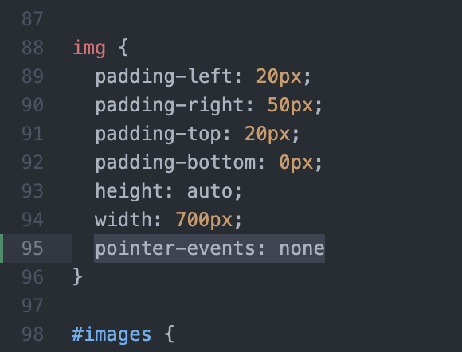

Lab 14: Debugging!
The purpose of this lab was to spend a little time de-bugging some of our prior labs and making them work better!
Challenges
While the majority of my labs have been pretty well bug fixed, Lu's labs had a few more problems over the quarter, and so we spent some time fixing theirs.
Problems
No real problems this time around other than some pesky errors that Lu ran into with their stuff not linking. With some trial and error tho we were able to get it mostly working again.
Results!
Here's some of the de-bugging I did! Not much but this forst one was kind of game-breaking.
This lab, lab 9, was my most complicated one as I spent extra time making a whole
interactive experience. however, there was one bug as the images that printed
would sometimes cover up the button that you needed to click to "cash out"...
So I did a little digging and found a way to make it so that the user can click "through" the images if they need to.
Here you can see that if users log in on a web browser that is small,
sometimes the bitcoin will eclipse the cash out button. But now even tho
the bitcoin is in the way, you can still press the button through the bitcoin.

This was done by adding a cool CSS tag that takes
away the click functionality from the image, and allows you to click
through it if you need to! Simple fix, but makes a big difference!